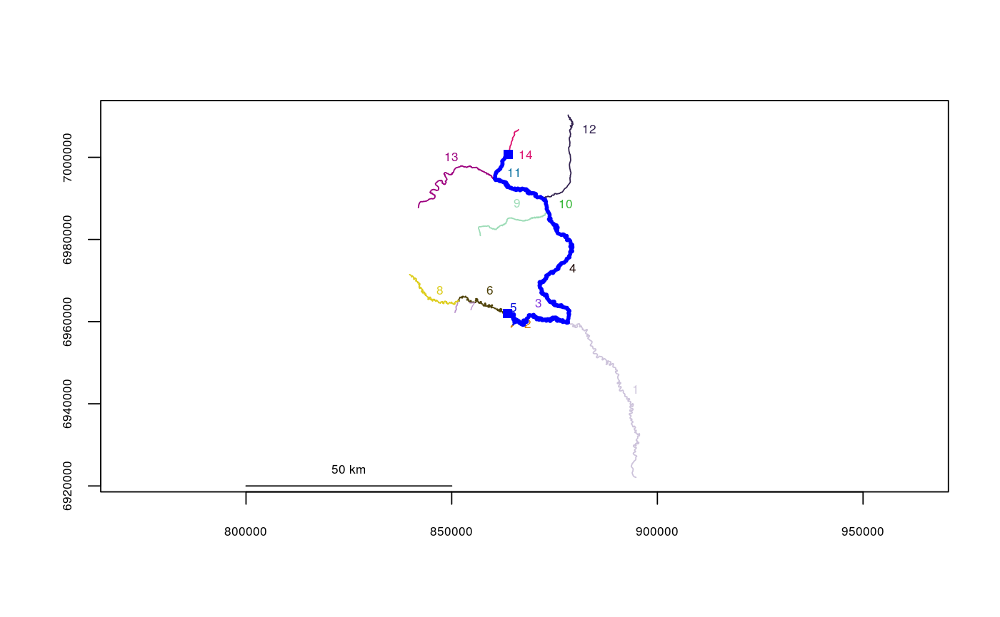

Calculates the total river network distance between two points on the river network, given in river locations (segment and vertex).
riverdistance(startseg = NULL, endseg = NULL, startvert, endvert, rivers, path = NULL, map = FALSE, add = FALSE, stopiferror = TRUE, algorithm = NULL)
| startseg | Segment number of the start of the route |
|---|---|
| endseg | Segment number of the end of the route |
| startvert | Vertex number of the start of the route |
| endvert | Vertex number of the end of the route |
| rivers | The river network object to use |
| path | (optional) The vector-format route of segment numbers can also be supplied instead of the starting and ending segments. |
| map | Whether or not to draw a sanity-check map, showing the calculated route in entirety. Defaults to FALSE. |
| add | If |
| stopiferror | Whether or not to exit with an error if a route cannot be
found. If this is set to |
| algorithm | Which route detection algorithm to use ( |
Total route distance, in the units of the coordinate system used (this will likely be meters).
If a distance lookup table ($distlookup) is present in the river network object, accepting NULL will bypass route detection and return distance automatically, the fastest algorithm of all. This is done automatically in buildsegroutes, but can be called directly using buildlookup.
Building routes from the river mouth to each river network segment and/or distance lookup tables will greatly reduce computation time (see buildsegroutes).
data(Gulk) riverdistance(startseg=6, endseg=14, startvert=100, endvert=200, rivers=Gulk)#> [1] 126415.9riverdistance(startvert=100, endvert=200, path=c(6,3,4,10,11,14), rivers=Gulk)#> [1] 126415.9riverdistance(startseg=6, endseg=14, startvert=100, endvert=200, rivers=Gulk, map=TRUE)#> [1] 126415.9# speed comparison: data(abstreams) tstart <- Sys.time() riverdistance(startseg=120, startvert=10, endseg=131, endvert=10, rivers=abstreams, algorithm="sequential")#> [1] 68937.76Sys.time()- tstart#> Time difference of 0.148103 secststart <- Sys.time() riverdistance(startseg=120, startvert=10, endseg=131, endvert=10, rivers=abstreams, algorithm="Dijkstra")#> [1] 68937.76Sys.time()- tstart#> Time difference of 0.003751278 secststart <- Sys.time() riverdistance(startseg=120, startvert=10, endseg=131, endvert=10, rivers=abstreams)#> [1] 68937.76# Note: it is not necessary to specify the algorithm here: the distance function # will automatically select the fastest algorithm unless otherwise specified. Sys.time()- tstart#> Time difference of 0.001847506 secs